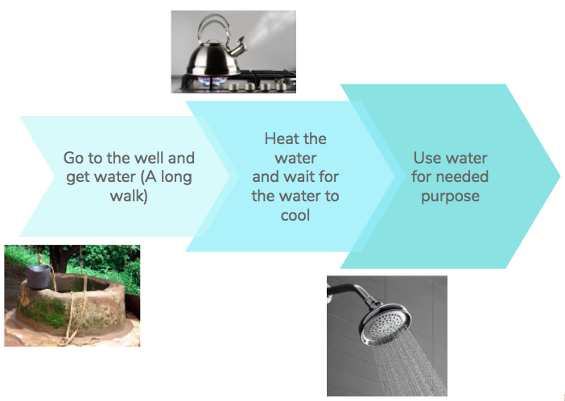
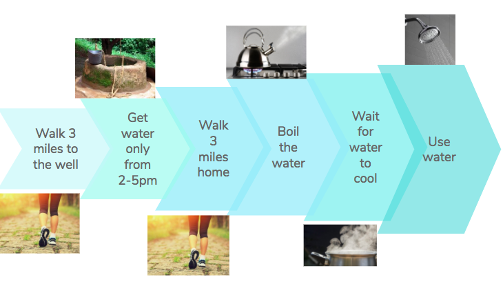
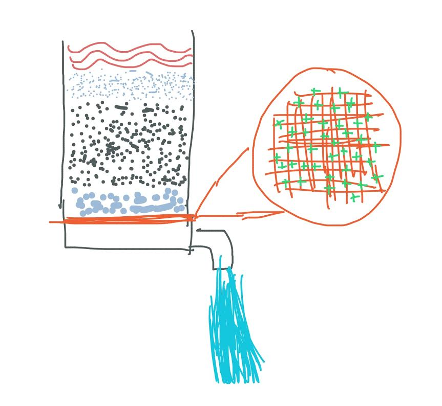
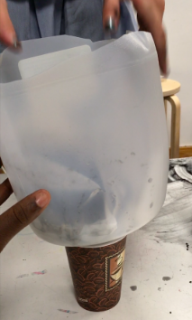

We made this game on scratch to raise awareness of what we are doing though a fun and interactive game.
We have multiple people in our group who have had personal experiences or a family member has had a personal experience with water challenges. 1 example is Joyin, who when she was in Nigeria visiting family, she learned their process of getting
water, which is:

Another example is with Diana, whose grandparents had to go through this process:

Because of these experiences we decided to make a filter.
Mock up:

Real Thing:
